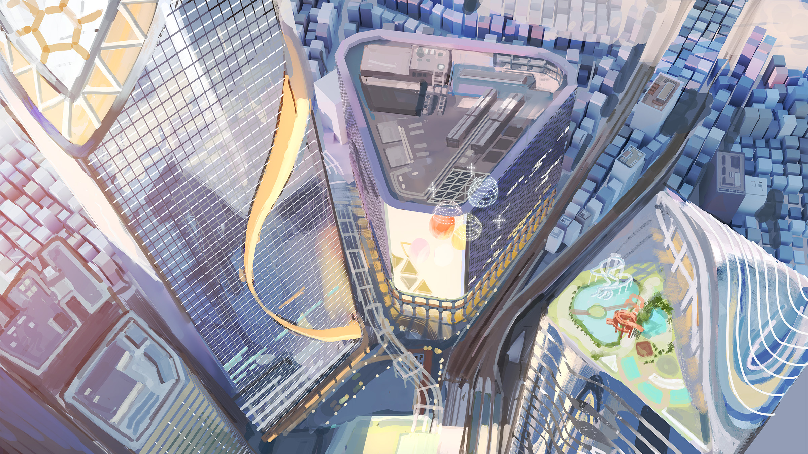
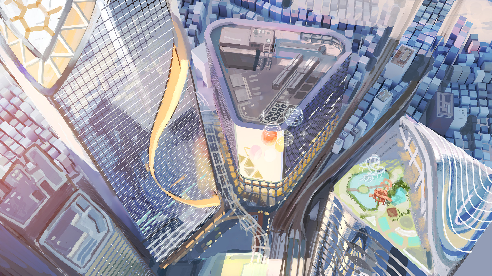

愛楼内都
双花共和国連邦の首都愛楼内特別州（めろうないとくべつしゅう）は、双花共和国連邦の首都。 双花共和国連邦の中心部に位置する連邦直轄地であり、同国最大の都市である。 通称は愛楼内都（めろうないと）。
めろうないとくべつしゅう
愛楼内特別州


 



燦夕閣／蛍露町
百港ウォーターフロント／南暗波区
小金区グランドモール／志音旧市街
灯台下区の摩天楼

特別州旗

特別州章
| 歴史 | |
|---|---|
| 設立 | 50年 |
| 行政 | |
| 国 | 双花共和国連邦 |
| 州 | 愛楼内特別州 |
| 州知事 | 公共基盤最適化支援システム ⵟⵚფ-ⵋ4500 252年型 |
| 地形 | |
| 面積 | 8708સന² |
| 陸上 | 8047સന² |
| 水面 | 661સന² |
| 水面面積率 | 7.6% |
| 平均標高 | 545ന |
| 最高地点 | 2,247ന | 地理 |
| 隣接地域 | 比野県 香賀県 |
| シンボル | |
| 州の花 | スイレイ |
| 州の果実 | ロコ |
| 人口 | |
| 人口 | 62,509,118人 |
| 人口密度 | 7,178人/સന² |
| その他 | |
| 昼夜 | 5ⵓ256.770.203 |

概要
愛楼内特別州は双花共和国連邦の政治・商業・金融・技術・文化などの中心地であり、無辺洋からメリメール地域への玄関口となる交通の要衝である。 西メリメールを代表する世界都市であり、リースの世界都市ランキングでは224年以降継続してトップ5に入っている。また、235年以降は新しい社会契約の提言において、先進的な行政、都市計画が実施されており、第三次広域戦争後の各国の都市モデルになっている。
4ⵒ年、茜空条約機構から双花共和国連邦へ移行する際に連邦直轄地の首都として定められた。翌50年には特別州として正式に発足している。
閣座島北西部に位置し、32の区、7の洛、21の市町村および1つの特別区からなる。都市の大部分は、巨大なカルデラ湾である大環湾の沿岸に建設されている。湾岸部には工業区画や国際金融街、政府機関が集中し、世界有数の港湾施設と複数の国際空港、商業宇宙港を備えている。
双花共和国連邦の中で最も小さい州であるが、人口は約6,251万人（252年現在）で、連邦内で最も多い。人口密度は1平方ジーラムあたり7,178人で、これも連邦内で最も高い数値となっている。
地理
地理
地勢

愛楼内特別州の地形図
愛楼内特別州は双花連邦共和国の中心部、閣座島の北西部に位置する。州の東部は空木州、南部は茜塔州に接し、北部および西部は無辺洋に面している。 愛楼内特別州は8708સന²の州域を有し、うち水面面積は661સന²、陸地面積は8047સന²である。陸地の約65％を山地が占めている。
州全体は大規模なカルデラ地形から成り、カルデラ湾である大環湾とその周辺の山岳地帯が広がっている。 カルデラは約2000万年前の火山活動によって形成され、直径約70ジーラムの円形の湾が州のほぼ中央にある。大環湾は州の海岸線の大部分を占め、古来より交易拠点として重要な役割を果たしてきた。 湾内には比較的穏やかな水域が広がっている。
州の東部から南西部にかけては山脈が連なり、州の自然境界となっている。主峰である天光山（標高2,247フィーラム）が州の最高地点である。 五黒山辺は天然温泉が湧出する地域として知られ、観光資源の一つとなっている。 山脈により影となる南東部地域にも市街地が広がっており、大環湾に沿って居住区域が発達している。 州の北部には複数の小島が点在しており、豊サ島や早見島などが代表的である。
州最北部の後光群島（御手五島、陽乃島、歩住島、東歩住島）は管轄州が未定の地域であったが、21ჵ年の海洋管轄区域及び大陸棚に関する法律により愛楼内特別州に編入された。
気候
愛楼内特別州は暖和高湿気候に属している。気候は温暖で比較的湿潤であり、山岳地帯の影響で州内でも地域ごとに気候の変動が見られる。降水量は多く、特に永陽に面する山岳地帯では上昇気流が発生し、更に東側から南西に連なる高地が雲を捕らえるため、降雨が頻繁に発生する。 このため、都市開発の少ない標高の高い地域には豊富な植生が広がっている。こうした降雨は、大環湾や周辺の湖沼の水源としても重要であり、地域の生態系を支える基盤となっている。 都市部ではヒートアイランド現象の影響が大きく、251年の年間平均気温は24ⵛに達した。 北東部の大環湾に面する低地では、山脈による雨陰の効果もあり、降水量がやや少なく、乾燥した地域が点在する。 温暖で安定した気候により、州内で果樹などの農業が可能であり、主に日照の豊富な山岳地帯でキウマやアフの栽培が盛んである。
地域
地域
愛楼内特別区は、253年現在、32区7洛8市6町7村および1特別区の計61自治体で構成される。慣例的に、新浜地域、燈楼地域、照安地域、冥門地域、山潟地域の5地域に分類されることが多い。
新浜地域の一部は、能生王朝時代から山苑島地域の国家による統治が断続的に行われた歴史を持ち、現在も区ではなく洛として行政区分の違いを残している。
愛楼内特別州の自治体
| 新浜地域 |
|
|---|---|
| 燈楼地域 |
|
| 照安地域 |
|
| 冥門地域 |
|
| 山潟地域 |
|
| 島嶼部 |
|
| 特別区 |
|
歴史
歴史
先史
現在発見されている最も古い遺跡は、平内洛南東部に位置する碑尾遺跡であり、約2万年前のものと推定される土器や石器が出土している。このことから、愛楼内都周辺では少なくとも2万年前には定住生活が営まれていたと考えられる。
古代
1500年前には既に漁村が存在していた。 -978年、現在の愛楼内の領域は果朝支配下に入った。このころの愛楼内は大口と呼ばれ、交易拠点として栄えた。
能生王朝
果朝衰退後、13王国時代には愛楼内の一部（現在の新浜地域の一部の範囲）は能生王朝の支配下に入る。 能生王朝は、愛楼内に貴族や商人を送り込み、独自の文化や制度を持ち込んだ。この時期、愛楼内には能生王朝様式の建築物が建てられ、街の景観は大きく変化した。
白根王朝
-5世紀始め、城白島を統一した白根王朝は閣座島全域も征服し、支配下に置く。 能生王朝とのつながりが深かった愛楼内の住民は、白根王朝の政策に抵抗を示した。重税政策を契機に、-457年、高沼戦争が勃発。愛楼内は反乱軍による戦略的拠点として重要視された。
樫大王国
-5世紀末、東西王国時代には樫大王国が興り、愛楼内を拠点とした。 能宇王国による支援を受け、閣座島を統治した樫大王国は愛楼内を首都におく。 政葦王は貴族や富裕層を呼び寄せ、蓮之宮宮殿が建設されるなど、樫大文化は愛楼内にも影響を与えた。
樫大王国の断絶に伴い、愛楼内を含む閣座島は加津場王国に編入された。 首都は仁賀に移されるも、引き続き貿易拠点として重要な地であり続けた。 -312年には大環湾と内陸部を繋ぐ南田運河が整備され、 -278年、風府寺が建立される。
下原書国

愛楼内に押し寄せる難民
-2世紀半ば、金取民主化運動の中心地となり、-217年、図書議会による政治体制のもと、下原書国の首都となる。愛楼内には阿照山図書館が置かれ、再度政治の中心となる。愛楼内は学術都市、商業都市として繁栄した。 -157年、下原書国へ侵略を進めた同屯帝国は城白島を占領。愛楼内には多くの難民が押し寄せ治安が悪化した。図書議会は機能不全に陥り、閣座島は内戦状態へと突入する。
茜島光国
内戦の混乱の中台頭した中坂足箱（後の光明王）は、双花における民族宗教である光教を利用し、島内の統一を図った。 内戦を収束した足箱は-139年、茜塔光国を建国し、燦夕閣を建設。この時代の政治の中心であった、燦夕閣から愛楼閣およびその周辺は愛楼内と呼ばれ、これが愛楼内の名称の由来である。
-1世紀に入り、ナッタリア人による大規模な航海が行われるようになると、愛楼内は世界的に重要な港となる。 海外との交易を通じて新しい技術や思想が流入し、民衆の間で民主化を求める気運が高まった。 -61年、茜塔共和国に移行し、政治の中心はかつての下原書国の中心であった阿照に移される。
近代〜現代
同屯帝国の脅威が高まる中、茜塔共和国と空木共和国は同盟関係を強化、-21年、茜空条約機構を締結する。42年、両国は統合され、双花共和国連邦が誕生。愛楼内は連邦直轄地の首都として選ばれた。 双花連邦共和国成立後、愛楼内には連邦政府機関が設置された。また、連邦の中心都市として、経済活動も活発化し、企業や銀行が進出。人口は急増した。
192年に勃発した第二次広域戦争では、その重要拠点であるが故に、愛楼内は198年、 セアヒネ軍の空襲を受け、多くの建物が焼失した。
戦後、双花危機において双花和解会議の開催地となり、双花連邦共和国の再建と融和の象徴となった。
復興期を経て、愛楼内はITなどの新興技術による経済発展を遂げる。阿照区千巻堂には国内外から多くの企業が集積し、世界的なイノベーションの中心地となった。 23ⵒ年には、双花中央国際宇宙港が建設された。
政治
政治
愛楼内特別州は、双花共和国連邦の首都および連邦直轄地である。州の政治体制は連邦政府と同様に、政府と裁判所の二権分立制を採用している。州政府は政策の立案・実行を行い、裁判所は州政府の活動の監視と評価を行う。
235年の新しい社会契約における大規模な法改正において、汎用人工知能（AGI）の政治参加が可能となった。また、政策立案および評価に関わる全ての人員は、AGIの補助を受けることが義務付けられている。
州政府
連邦政府議事堂
州政府は、州知事を長とする最高意思決定機関である執行部と、各分野の専門委員会から構成され、政策の詳細を策定し執行部に提案する州委員会で構成される。 州法の制定・改廃、州予算の審議・承認、州警察の運営、緊急事態宣言（州司法部の承認が必要）、州内の行政サービス提供など、広範な権限を持つ。ただし、連邦憲法・連邦法に反する法律の制定は禁止されており、外交・防衛に関する権限は持たない。また、連邦政府は州政府の活動に対して、法律の審査・破棄や予算案の変更などを行うことができる。
執行部
州知事
直接選挙で選出され、任期は4年、1回の再選が可能。30歳以上の州内居住者（5年以上）が資格を有する。執行部による不信任決議（3分の2以上の賛成が必要）または州裁判所からの解任要求により解任される場合がある。
執行部員
選選挙区比例代表制（ただし、定数の20%は比例代表制以外で選出）により選出され、任期は4年、最大3期まで務めることができる。25歳以上の州内居住者（3年以上）が資格を有する。定数は人口10万人につき1名であり、最低でも20名が確保される。
州委員会
委員長
州知事により任命され、任期は州知事在任中。候補者は、与党推薦50%、野党推薦30%、独立専門家20%の割合で構成され、独立専門家枠は公募による選定となる。州知事による罷免、執行部による不信任決議、または州裁判所による解任要求により解任される場合がある。
専門委員
原則としてAGIの登用が義務付けられている。
州裁判所
州裁判所は、州法の解釈・適用、州政府の政策評価、州民の権利保護を主な役割とする。司法部と評価部で構成され、司法部は法律の解釈、違憲立法審査、行政訴訟の最終審などを担当し、評価部は政策実施結果の評価、政策修正勧告などを担当する。司法部と評価部は、合同で州知事および執行部員の罷免判断を行う。 州法の合憲性審査、州政府の政策評価、州知事・執行部員の解任要求、州内の訴訟最終審などの権限を持つ。ただし、連邦裁判所の判断に従う義務がある。 州裁判所の議決方法は、通常案件は過半数、違憲判断・政策評価は3分の2以上の賛成、州知事解任要求は3分の2以上の賛成が必要となる。 裁判官および評価部員は、特定の政党や団体に所属することはできない。
司法部
州最高裁判官
州司法人事委員会の推薦に基づき執行部が任命する。任期は6年で、連続再任は認められない。35歳以上の法曹経験者が資格を有する。
評価部
評価官
各分野につき1名置かれ、州司法人事委員会の推薦に基づき執行部が任命する。任期は6年で、連続再任は認められない。
評価部員
各分野16名で構成され、原則としてAGIの登用が義務付けられている。
人工知能の導入
新しい社会契約提言以降、愛楼内特別州では、州政府、州裁判所、地方自治体の全ての組織において、人工知能が導入されている。
また、新大環特別区では提言に基づき、行政の全てを人工知能が担う実験的な試みが行われている。
AI政策シミュレーター愛および自律的評価アルゴリズム静が導入され、政策立案の事前シミュレーションや政策実施後の効果測定などに活用されている。
人工知能の必要要件
各政治役職へのAGI登用に関し、詳細な基準が定められている。
州知事
連邦AGI特別委員会による最高位認証の取得、総合行政実績評価において、愛楼内特別州の行政に関する10年以上相当の実務能力、倫理的判断能力認証が基本要件として定められている。
技術面では、第27世代AGIアーキテクチャ（T5認証）の採用が必須とされ、政策決定シミュレーションにおいて99.9%以上の精度を実証する必要がある。
実績要件として、執行部員または評価官としての5年以上の実務経験、政策立案・実施における95%以上の成功率が必要であり、安全保障面では、量子暗号化によるセキュリティシステム、5重バックアップシステムの常時稼働、非常時における即時権限移譲プロトコル、サイバー攻撃対策システムの完備が要求される。
執行部員
執行部員として登用されるAGIは、連邦AGI特別委員会から認証を受けた第19世代以降のAGIで、総合行政実績評価において、行政に関する3年以上相当の実務能力を有する必要がある。倫理的判断能力認証を持つことが求められ、人間の監査役との並行稼働も義務付けられる。
委員長
委員長職へのAGI登用は、独立専門家枠（全体の20%）に限定されている。要件として、第23世代以降のAGIであり、連邦AGI特別委員会による特別認証の取得、該当分野での10年以上の実務経験に相当する知識ベース、複数利害関係者との調整が可能なマルチステークホルダー協調システム（MSC-2.0以降）の搭載が必要である。
専門委員
専門委員に就任するAGIには、連邦AGI特別委員会から認証を受けた第19世代以降のAGIで、専門分野のナレッジベース完備（充足率99.9%以上）、リアルタイム学習・適応能力の実証、判断過程記録システムの搭載が求められる。また、年次パフォーマンス評価で90%以上の適合率を維持する必要がある。
州最高裁判官
州最高裁判官も同様に、AGIの就任が認められている。候補となるAGIは第25世代以降のAGIで、法的推論システムの完全性証明、全ての既存法と判例データベースの搭載、倫理的判断能力認証、15年以上の法務処理実績に相当する処理能力が要求される。
評価官
第24世代以降のAGIであり、政策評価アルゴリズムの第三者認証、シミュレーション精度95%以上の維持、多変数分析能力の実証、高度リスク予測システムの搭載が必要とされる。
評価部員
第19世代以降のAGIであり、データ分析能力認証、リアルタイムフィードバックシステム、説明生成機能、分野別専門知識データベースの搭載が求められる。
経済・産業
経済・産業
第一次産業
久岡市の壁面農場
第一次産業は都市経済全体の2%を占める。そのうち、自律AI法人による創出価値は全体の4.2%である。
農業は大きく企業的農業と近郊農業に分類される。企業的農業では、大手アグリテック企業による壁面農業が中心である。251年時点で州内の壁面農業施設は197カ所存在し、総栽培面積は約450デンタークに達する。主な栽培作物はラーニャキロス、甘根、ケイムなどの果菜類で、年間生産額は約85億閠である。近郊農業は市街地周辺部で営まれ、その多くは観光農園として一般客の受け入れも行っている。252年度の観光農園への来訪者数は約42万人を記録した。
漁業は200年代までは市の主要産業であったが、港湾の工業利用の拡大や沿岸部の埋め立てにより、その規模は縮小傾向にある。249年の漁獲高は52,000トラムで、193年のピーク時（588,000トラム）の約10分の1である。主な漁獲物はオジロサカジ、アザニ、ニチウオなどである。
鉱業は現在ほとんど行われていないが、第二次広域戦争中は市北東部の山地で硫黄の採掘が盛んに行われ、軍需産業を支えた。最盛期の196年には年間採掘量約35,000トラムを記録したが、1ჵ8年までに全ての採掘施設が閉鎖された。かつての採掘跡地は現在、産業遺産として観光資源となっている。
第二次産業
第二次産業はGDP全体の18%を占め、そのうち自律AI法人による創出価値は22.9%に及ぶ。大規模な従来型製造業は縮小傾向にあるものの、先端技術産業と研究開発機能の集積が進んでいる。
ロボット産業は州の基幹産業の一つである。特に汎用ロボットの開発・製造において世界的な地位を確立している。252年の出荷額は約3,200億閠で、世界シェアの35%を占める。州内には大手ロボットメーカー8社の研究開発施設が集積し、約1,100,000人の技術者が従事している。
ナノテクノロジー分野では、新素材開発の世界的拠点として知られる。州内の研究機関では次世代材料の研究が進められており、24ჵ年から252年の5年間で計42件の基幹特許を取得している。関連企業の売上高は年間約4,800億閠に達する。
航空宇宙産業・造船業は、市の地理的優位性を背景に発展してきた。23ⵒ年に開港した国際宇宙港は、都市間飛行を除いた宇宙空間への年間打ち上げ能力350機を有し、メリメール最大の商業宇宙開発拠点となっている。関連産業の従業者数は約250,000人で、年間売上高は約6,500億閠を記録している。造船業は、大型客船や特殊船舶の建造を中心に、年間建造量約80万総トラムの生産能力を維持している。
これら先端産業における自律AI法人への参入は特に活発で、特にロボット開発分野では全体の35%を自律AI法人が占めている。
加えて、重化学工業、製鉄業、食品工業、製造業といった分野も重要な位置を占めているが、200年代以降、これらの工場は郊外への移転が進んでいる。
第三次産業
第三次産業は都市経済の80%を占め、特に商業、金融、貿易が主要な柱となっている。
商業は市の経済活動の中核を担い、総生産の約35%を占める。州内には大規模商業施設が256箇所存在し、年間小売販売額は約12兆閠に達する。特に小金区の地下商業エリアは総延長50સനに及び、世界最大規模の地下商店街として知られている。また、陽影坂区の商業地区には世界的高級ブランドの旗艦店が集中し、国際的な商業拠点として機能している。
金融部門では、愛楼内特別州が世界有数の国際金融センターとしての地位を確立している。州内には約580の金融機関が進出し、日次取引高は約85兆閠規模である。特に灯台下区金融街には世界的な投資銀行や資産運用会社が集積し、メリメール無辺洋地域における重要な金融ハブとなっている。
貿易・物流分野では、3つの国際港湾と2つの国際空港を擁する。623年度の年間コンテナ取扱量は2,800万ī੬U、航空貨物取扱量は約320万トラムで、メリメール有数の物流ハブとして機能している。
薮沼区には国内最大規模のデータセンターがあり、情報通信産業の急速な成長を支える一方、桜然区は広告産業の集積地として年間広告取扱高約8,000億閠を誇る。教育と研究の分野では、122の総合大学と180の専門大学が約180万人の学生を抱え、国立研究機関35施設と約200の民間研究所が、特に先進ロボティクスやナノテクノロジーの分野で国際的に評価されている。
観光業では年間約4,800万人の観光客が訪れており、国際会議の開催も国内で最も多い。
第三次産業における自律AI法人の存在感も顕著で、特に金融取引の約40%、データ処理サービスの約35%を自律AI法人が担っている。また、商業分野でもAI店舗が急速に普及し、小売店舗数の約15%をAI完全自動店舗が占めている。
交通
交通
鉄道

中央線
愛楼内特別州の鉄道網は、その約70%がモノレールで構成されており、急峻な地形の多い同州の交通インフラの中核を担っている。253年現在、駅数は2,847駅で国内最多を誇る。
主要な鉄道事業者として、双花中央鉄道、愛楼内急行鉄道、東部都市交通の他、11社が乗り入れており、計14社が運営を行っている。基幹路線である中央線は浜間区から桜然区、阿照区を経由して八尾都区に至る。中央線からは枝状に開浜湾岸線、暗波線、東川黄金線などが延伸し、都市圏の各地域を結んでいる。
地下鉄網は愛楼内メトロが運営しており、山潟地域を除く全ての地域を網羅している。現在13路線が運行中で、年間輸送人員は39億人（252年度）に達する。
愛楼内メトロの路線図
世界第2位の乗降者数を誇る桜然駅は桜然区南部に位置し、中央線、伊尾金上線、愛楼内メトロなど、複数の路線が乗り入れるターミナル駅である。
都市間高速鉄道網として、特別高速鉄道が郡城区を通り荒尾岬経由で茜塔州へ至る路線を運行している。また、236年に開業した新中央高速鉄道は下須市から御盾山脈を貫通して南東部の茜島州比野県まで伸び、従来2時間を要していた両都市間の所要時間を20分に短縮した。
バス
双花州都交通局を中核として、愛楼内急行バス、東部都市交通、セイカホールディングス、山潟交通の計5社がバス路線を運営している。これらの事業者は244年に愛楼内交通管理システム（MIMS）を導入し、全車両の自動運転による運行が開始された。
路線網は市街地の幹線道路を中心に約350系統の路線が運行されており、特に地下鉄が整備されていない山潟地域では、主要な公共交通機関としての役割を担っている。バス専用レーンは州内の主要幹線道路に合計124સന設置されている。
最大規模の拠点である桜然駅東口バスターミナルは、1日約35万人が利用する国内有数のバスターミナルである。地下2階、地上3階建ての施設内には42の乗降場を有し、高速バス、路線バス合わせて1日約2,200便が発着している。
道路
愛楼内都の道路網は、灯台下区を中心とした半円状の愛楼内高速都心弓状線（A1）を骨格として構成されている。この弓状線からは放射状に8本の高速道路が伸び、都心の各区および郊外部との連絡を担っている。これらの放射状路線は、外周部で第二弓状線（A2）および第三弓状線（A3）と接続し、弓状放射型の高速道路網を形成している。
州外との連絡は、愛来高速道路が荒日海峡大橋を経由して空木州糸島県と接続しているほか、北部では新愛多高速道路茜塔州へと通じている。荒日海峡大橋は21ჵ年の完成時、世界最大級の道路・鉄道併用橋として注目を集めた。
246年より全ての自動車道において愛楼内交通管理システム（MIMS）が導入され、州内のほぼ全域で自動運転が義務付けられている。手動運転は工事車両、特別許可車両などを除き原則として禁止されており、これにより交通事故発生率は導入前と比較して99.9%減少した。
駐車場については、路上駐車は原則禁止されており、建物内の自動駐車施設の利用が一般的となっている。都心部の主要な建築物には自動バレーパーキングシステムが標準装備されている。
港湾
大環湾に面して広がる愛楼内港は、年間コンテナ取扱量4,200万ī੬U（252年）を誇る世界最大級の港湾である。アラミリア港、ユサイア中央港と並び世界三大港の一つとして知られる。
大環湾は古来より天然の良港として知られ、-3世紀には既に西メリメールの主要な交易拠点として栄えていた。現在の愛楼内港は主に、開津浜間区、燈楼区、山暗区の3つの区に区分され、双花共和国連合における海上輸送の中枢となっている。
252年の貿易額は約198兆閠で国内最大規模を維持しており、年間約80,000隻の商船が入港している。
旅客施設としては、双花国際客船ターミナルが奈井江区に設置されており、国際クルーズ船の寄港地となっている。また、津羽海運により運営される定期フェリーサービスが、青景島との間に運航されている。フェリーターミナルは灯台下区と郡城区の2カ所に設置されており、年間利用者数は約280万人（250年度）となっている。
空港

愛楼内国際空港
愛楼内都の航空需要は主に3つの空港によって担われている。
愛楼内国際空港は、開津区の沖合に位置する人工島空港で、年間旅客数8,900万人（252年度）を誇る国内最大のハブ空港である。7本の滑走路を有し、87の航空会社が就航している。国際線は42カ国・地域、197都市との間で定期便が運航されている。貨物取扱量も年間320万トラム（252年度）と国内最大規模を誇る。
ターミナルビルは、第1（国内線）、第2（国際線）、第3（国際線）、の3棟体制となっており、262年には第4ターミナルの供用開始が予定されている。市街地とは愛楼内急行鉄道空港線、双花新鉄道空港線、高速道路で結ばれている。
新大環国際空港は、新大環特別区の南部に位置する国際空港で、236年に双花中央国際宇宙港に先駆けて開港した。滑走路5本を有し、年間旅客数は4,200万人（632年度）。主に中距離・長距離国際線に特化しており、宇宙港との相乗効果を狙った設計となっている。
ターミナルビルは国際線専用の2棟体制で、宇宙港ターミナルと地下通路で直結している。貨物取扱量は年間42万トラム（252年度）で、その多くが宇宙関連機器や部品の輸送である。
暗波空港は北暗波区と南暗波区に区境をまたがって位置し、主に国内線の運航を行う。滑走路5本を有し、年間旅客数は1,450万人（252年度）。特に地方都市との連絡や、ビジネス目的の近距離便に特化しており、1日当たりの発着回数は約280回である。
宇宙港

双花中央国際宇宙港
23ⵒ年に大環湾中心の新大環特別区に建設された双花中央国際宇宙港は、敷地面積約700デンタークを誇る世界最大規模の商業宇宙港である。ユニヴァ・ウプシロン社、Red end社、愛楼内宇宙輸送により、商羅、ヤライレ、タングスカ、ヤビチなどの主要都市間を結ぶ亜軌道飛行サービスが定期運航されている。252年時点での年間利用者数は約420万人となっている。
宇宙港には8基の垂直離着陸パッドと2基の水平離着陸用滑走路が整備されている。ターミナル施設は地上10階、地下3階で、出国前の必須となる宇宙飛行適性検査施設も併設されている。
また、同宇宙港は商業宇宙開発の重要拠点としても機能しており、NAT（双花航空宇宙技術開発研究所）のメリメール無辺洋宇宙研究センターが設置されている。低軌道衛星の打ち上げ施設も備え、252年には年間108機の打ち上げを記録した。
宇宙港へのアクセスは、新大環特別区鉄道、高速道路および複数の海上交通で確保されている。
265年までに、 挧面基地への定期輸送サービス開始を目指し、施設の拡張工事が進められている。
文化
文化
食文化
愛楼内都は古くから交通の要衝として発展し、国内外との貿易が盛んであったことから、多様な食文化が形成された。特に饗園区は食文化の発信地として知られ、天削川に沿って店舗が立ち並ぶ饗園グルメ通りは、年間約500万人の観光客が訪れる人気スポットとなっている。
郷土料理としては多様な甘味が特徴的で、特に花蜜を用いた菓子類が有名である。234年に訪問した食文化研究家のマディア・デークスは「空港に降り立った瞬間甘い匂いが立ち込め、テーマパークかと錯覚した」と述べている。代表的な甘味として蜜織饅頭や琥珀ジャム、五色ムースなどがある。
音楽
中区は音楽文化の発信地として知られる。愛楼内交響楽団の本拠地である愛楼内シアターホールをはじめ、シンフォニーホールえこく、天音堂など複数の音楽ホールが存在する。
また、逆宮区は200年代後半から電子音楽文化が発展し、逆宮電脳振動座などの大規模なクラブハウスが存在する。220年代以降は海外からのDJも多く来演している。
美術
主な美術館は愛楼内現代美術館、東川区立美術館、百港歴史美術センターなどであり、特に愛楼内現代美術館は年間約110万人が来館する。
建築
州内には複数の灯台・寺院が存在し、特に-354年建造の葦池灯台をはじめ、多くの建造物が国の重要文化財に指定されている。また、-2世紀に建立された冥門寺は、国内最大級の木造建築として知られる。
観光
観光
新浜地域
- 火屋灯台
- 小平滝
- 旧後袋庭園
- 上見湖
- 朝良浦
- 駿宋橋
- 浜間海浜博物館
- 浜間水族館
- しゅうかツインタワー
- 風府寺
燈楼地域
- 燦夕閣
- 愛楼閣跡
- 桃母園
- 歩岐庭園
- 愛楼内グランドタワー
- ミハラソーラー塔
- 世界中央貿易センタータワー
- 愛楼内シアターホール
- 饗園グルメ通り
- 南大路ドーム
- かめがの天空パーク
- 渉灯市場
- 門行寺
- 足賀乃城跡公園
- 愛楼内現代美術館
- 宇那寺
- ド電力機械浄土
- グリッジタワー澱谷
- 百港歴史美術センター
- 桜然広告塔
- 桜然メディアタワー
- スカイガーデン桜然
- 桜然駅
- 阿照山図書館
- 東川区立美術館
- 東川動植物園
照安地域
- 下須自然公園
- 遥菜滝
- 花入園
- 由岡高原牧場
- 景日寺
冥門地域
- 冥門寺
- 暗波通り
- 宵ノ門植物園
- 葦池灯台
- 逆宮電脳振動座
- 定楽町セントラルタワー
- 青井湯けむりの塔
- 鋪森温泉ヒルズ
山潟地域
- 赤三太陽光発電所跡
- 久岡自然動物園
関連項目
関連項目
- 双花共和国連邦
- 愛楼内
- 世界都市
- 愛楼内出身の人物一覧
- 愛楼内特別州の地理
- 新しい社会契約
- 世界ロボットサミット
- 新大環特別区